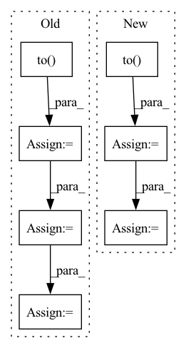

Pattern ID :12835

Before Change
model.zero_grad()
pred = model(
torch.autograd.Variable(batch).to(device), lengths.cpu().numpy()
) //// perform forward pass
pred = torch.squeeze(pred)
loss = criterion(
pred.to(device), torch.autograd.Variable(targets.float()).to(device)
) //// compute loss
loss.backward() //// perform backward pass
optimizer.step() //// update weights
pred_val = pred >= 0.5 //// get predictions
y_true += list(targets.int().numpy()) //// accumulate targets from batch
y_pred += list(
pred_val.data.int().detach().cpu().numpy()
After Change
model.zero_grad()
//// perform forward pass
pred = model(
sent1.to(device),
sent2.to(device),
sents1_len.to(device),
sents2_len.to(device),
)
//// compute loss
loss = criterion(
pred.to(device), torch.autograd.Variable(targets.float()).to(device)
)
//// perform backward pass
loss.backward()
//// update weights
optimizer.step()
//// accumulate targets from batch
y_true += list(targets.float().numpy())
//// accumulate preds from batch
y_pred += list(pred.data.float().detach().cpu().numpy())
//// accumulate train loss
total_loss += loss
In pattern: SUPERPATTERN
Frequency: 4
Non-data size: 7
Instances
Fragment ID: 43456150
Project Name: shahrukhx01/siamese-nn-semantic-text-similarity
Commit Name: f3d054dd14ef532c408b1306c3341115777ac22f
Time: 2021-12-30
Author: sk28671@gmail.com
File Name: siamese_sts/trainer/train.py
M Class Name: AnonimousClass
N Class Name: AnonimousClass
M Method Name: train_model(6)
N Method Name: train_model(6)
M Parent Class:
N Parent Class:
M File Name: siamese_sts/trainer/train.py
N File Name: siamese_sts/trainer/train.py
M Start Line: 16
M End Line: 47
N Start Line: 16
N End Line: 59
'>
Before Change
if i >= 10: break
frames = frames.to(DEVICE) // [1, T, 3, h, w]
frames_vis = postprocess_img(frames.squeeze(dim=0)) // [T, 3, h, w]
input = frames[:, :VIDEO_IN_LENGTH] // [1, t, 3, h, w]
pred_rgb = pred_rgb_model.pred_n(input, pred_length=VIDEO_PRED_LENGTH) // [1, T, 3, h, w]
pred_rgb_vis = postprocess_img(pred_rgb) // [T, 3, h, w]
pred_rgb = torch.cat([input, pred_rgb], dim=1)
pred_rgb = torch.stack([seg_model(pred_rgb[:, i]) for i in range(pred_rgb.shape[1])], dim=1)
pred_rgb = pred_rgb.argmax(dim=2).squeeze() // [T, h, w]
pred_then_colorized_vis = colorize_semseg(postprocess_mask(pred_rgb), num_classes=SYNPICK_CLASSES) // [T, 3, h, w]
frames_seg = [seg_model(frames[:, i]).argmax(dim=1) for i in range(frames.shape[1])]
frames_seg = torch.stack(frames_seg, dim=1) // [1, 1, h, w]
input_seg = frames_seg[:, :VIDEO_IN_LENGTH] // [1, t, 1, h, w]
pred_mask = pred_mask_model.pred_n(input_seg, pred_length=VIDEO_PRED_LENGTH)
pred_mask = pred_mask.argmax(dim=2) // [1, T, 1, h, w]
pred_mask = postprocess_mask(torch.cat([input_seg, pred_mask], dim=1).squeeze()) // [T, h, w]
pred_mask_vis = colorize_semseg(pred_mask, num_classes=SYNPICK_CLASSES) // [T, 3, h, w]
frames_colorized = colorize_semseg(postprocess_mask(frames_seg.squeeze()), num_classes=SYNPICK_CLASSES).unsqueeze(dim=0) // [1, T, 3, h, w]
frames_colorized_vis = postprocess_img(frames_colorized.squeeze(dim=0)) // [T, 3, h, w]
input_colorized = frames_colorized[:VIDEO_IN_LENGTH]
colorized_then_pred = pred_colorized_mask_model.pred_n(input_colorized, pred_length=VIDEO_PRED_LENGTH)
After Change
with torch.no_grad():
for i in tqdm(range(10)):
frames = next(iter_loader).to(DEVICE) // [1, T, 3, h, w]
frames_vis = postprocess_img(frames.squeeze(dim=0)) // [T, 3, h, w]
input = frames[:, :VIDEO_IN_LENGTH] // [1, t, 3, h, w]
pred_rgb = pred_rgb_model.pred_n(input, pred_length=VIDEO_PRED_LENGTH)
pred_rgb = torch.cat([input, pred_rgb], dim=1) // [1, T, 3, h, w]
pred_rgb_vis = postprocess_img(pred_rgb.squeeze(dim=0)) // [T, 3, h, w]
pred_rgb = torch.stack([seg_model(pred_rgb[:, i]) for i in range(pred_rgb.shape[1])], dim=1)
pred_rgb = pred_rgb.argmax(dim=2).squeeze() // [T, h, w]
pred_then_colorized_vis = colorize_semseg(postprocess_mask(pred_rgb), num_classes=SYNPICK_CLASSES).transpose(0, 3, 1, 2) // [T, 3, h, w]
frames_seg = torch.stack([seg_model(frames[:, i]) for i in range(frames.shape[1])], dim=1).argmax(dim=2) // [1, T, 1, h, w]
frames_seg_in = torch.stack([(frames_seg == i) for i in range(SYNPICK_CLASSES)], dim=2).float() // [1, T, c, h, w] one-hot float
input_seg = frames_seg_in[:, :VIDEO_IN_LENGTH] // [1, t, c, h, w]
pred_mask = pred_mask_model.pred_n(input_seg, pred_length=VIDEO_PRED_LENGTH).argmax(dim=2) // [1, n, 1, h, w]
pred_mask = torch.cat([input_seg.argmax(dim=2), pred_mask], dim=1).squeeze() // [T, h, w]
'>
Fragment ID: 43456213
Project Name: ais-bonn/vp-suite
Commit Name: 13016d4ab8ba4f8e7ee087155a6c5171f4d00ba3
Time: 2021-08-02
Author: boltres@ais.uni-bonn.de
File Name: scripts/visualize_4_way.py
M Class Name: AnonimousClass
N Class Name: AnonimousClass
M Method Name: visualize_4_way(1)
N Method Name: visualize_4_way(1)
M Parent Class:
N Parent Class:
M File Name: scripts/visualize_4_way.py
N File Name: scripts/visualize_4_way.py
M Start Line: 16
M End Line: 73
N Start Line: 17
N End Line: 74
'>
Before Change
backbone = models.__dict__[args.arch](pretrained=True)
num_classes = train_dataset.num_classes
pretrained_head = backbone.copy_head()
classifier = Classifier(backbone, num_classes, source_head=pretrained_head).to(device)
// define optimizer and lr scheduler
optimizer = SGD(classifier.get_parameters(args.lr), momentum=args.momentum, weight_decay=args.wd, nesterov=True)
lr_scheduler = torch.optim.lr_scheduler.MultiStepLR(optimizer, args.lr_decay_epochs, gamma=args.lr_gamma)
// resume from the best checkpoint
if args.phase != "train":
checkpoint = torch.load(logger.get_checkpoint_path("best"), map_location="cpu")
classifier.load_state_dict(checkpoint)
if args.phase == "test":
acc1 = validate(test_loader, classifier, args)
print(acc1)
return
// compute relationship
relationship_path = args.relationship
if not os.path.exists(relationship_path):
r = Relationship(determin_train_loader, val_loader, classifier)
relationship = r.get_relationship(direct=args.direct)
np.save(relationship_path, relationship)
else:
relationship = np.load(relationship_path)
After Change
print("=> using pre-trained model "{}"".format(args.arch))
backbone = models.__dict__[args.arch](pretrained=True)
num_classes = train_dataset.num_classes
classifier = Classifier(backbone, num_classes, head_source=backbone.copy_head()).to(device)
// define optimizer and lr scheduler
optimizer = SGD(classifier.get_parameters(args.lr), momentum=args.momentum, weight_decay=args.wd, nesterov=True)
lr_scheduler = torch.optim.lr_scheduler.MultiStepLR(optimizer, args.lr_decay_epochs, gamma=args.lr_gamma)
// resume from the best checkpoint
if args.phase == "test":
checkpoint = torch.load(logger.get_checkpoint_path("best"), map_location="cpu")
classifier.load_state_dict(checkpoint)
acc1 = validate(val_loader, classifier, args)
print(acc1)
return
// build relationship between source classes and target classes
relationship = Relationship(determin_train_loader, classifier, device, os.path.join(logger.root, args.relationship))
co_tuning_loss = CoTuningLoss()
// start training
'>
Fragment ID: 43457152
Project Name: thuml/transfer-learning-library
Commit Name: d2d33527cdc174b9ef6dd2644337e3e3e50028ac
Time: 2021-03-10
Author: 13126830206@163.com
File Name: examples-ft/classification/co_tuning.py
M Class Name: AnonimousClass
N Class Name: AnonimousClass
M Method Name: main(1)
N Method Name: main(1)
M Parent Class:
N Parent Class:
M File Name: examples-ft/classification/co_tuning.py
N File Name: examples-ft/classification/co_tuning.py
M Start Line: 33
M End Line: 132
N Start Line: 30
N End Line: 100
'>
Before Change
optimizer.zero_microbatch_grad()
output = model(torch.unsqueeze(X_microbatch.to(torch.float32), 0)) //这要是这里要做升维
loss = criterion(output, torch.unsqueeze(y_microbatch.to(torch.long), 0)) //相反，这边对于的output就不用升维了
loss.backward() //梯度求导，这边求出梯度
optimizer.microbatch_step() // 这个step做的是每个样本的梯度裁剪和梯度累加的操作
train_loss += loss.item() // 损失累加
prediction = output.argmax(dim=1, keepdim=True) // 将one-hot输出转为单个标量
correct += prediction.eq(y_microbatch.view_as(prediction)).sum().item() // 比较得到准确率
After Change
optimizer.step() // 这个做的是梯度加噪和梯度平均更新下降的操作
//训练集测试损失值和准确率
train_output=model(data.to(torch.float32))
train_loss=criterion(train_output,target).item()
prediction = train_output.argmax(dim=1, keepdim=True) // 将one-hot输出转为单个标量
correct = prediction.eq(target.view_as(prediction)).sum().item() // 比较得到准确率
train_acc=100. * correct/len(data)
i+=1
// print(f"batch: {i}, "f"Train set: loss: {train_loss:.4f}, "
'>
Fragment ID: 43456154
Project Name: jefffffu/awesome-differential-privacy-and-meachine-learning
Commit Name: 2ebbe536f3de4fe260e92dfa2a45dd3bab30a414
Time: 2022-12-06
Author: 1193147851@qq.com
File Name: train_and_validation/train_with_dp.py
M Class Name: AnonimousClass
N Class Name: AnonimousClass
M Method Name: train_dynamic_add_noise(4)
N Method Name: train_dynamic_add_noise(4)
M Parent Class:
N Parent Class:
M File Name: train_and_validation/train_with_dp.py
N File Name: train_and_validation/train_with_dp.py
M Start Line: 10
M End Line: 40
N Start Line: 13
N End Line: 45